Prehľad výskumu — tri kategórie
A · Optimalizácia parametrov
- Titán GRADE 2
- Spekaný karbid WC-Co
Nájsť optimálne nastavenie lasera pre kvalitu povrchu a úber materiálu.
B · Tribológia povrchu
- Oceľ 11373 — drážky a jamky
- Nástrojová oceľ 1.2311 — veľké štruktúry
- Nástrojová oceľ 90MnCrV8 + mazivá
Vytvoriť mikroštruktúry laserom; merať trenie Ring testom.
C · Aplikovaná výroba
- Lámač triesok na reznej doštičke
- Textúrovanie vstrekovacích foriem
Vyrobiť funkčné diely; vyhodnotiť rozmerovú kvalitu.
Platforma DMG MORI LASERTEC 80 Shape — päťosové CNC, pulzný yterbiový vláknový laser, 1068 nm, max. 100 W · Centrum excelentnosti CE5AM, MTF STU Trnava
Návrh experimentu — titán GRADE 2
- Materiál: technicky čistý titán GRADE 2 (vzorky z plochej tyče)
- Stroj: LASERTEC 80 Shape (yterbiový vláknový laser 100 W)
- Plán: ortogonálna matica Taguchi L9 — 9 experimentov
- Dve stratégie skenovania: šrafovanie vs. krížové šrafovanie
- Ra merané na každej vzorke v dvoch na seba kolmých smeroch
- Štatistická analýza: DFA + ANOVA (Minitab)

DMG MORI LASERTEC 80 Shape — centrum CE5AM, MTF STU Trnava
Taguchi L9 — faktory a stratégie skenovania
| Faktor | Úroveň 1 | Úroveň 2 | Úroveň 3 |
|---|---|---|---|
| Frekvencia pulzov (kHz) | 40 | 60 | 80 |
| Výkon lasera (%) | 50 | 75 | 100 |
| Rýchlosť skenovania (mm/s) | 1 000 | 1 600 | 2 200 |
| Rozostup dráh (µm) | 5 | 10 | 15 |
9 experimentov × 2 stratégie × 2 smery merania = 36 hodnôt Ra.
Obe stratégie skúšané na rovnakom povrchu titánovej vzorky.
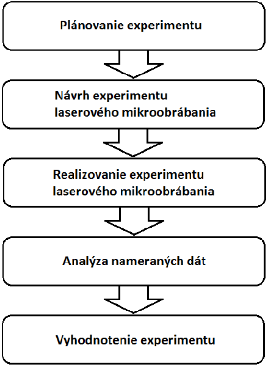
Šrafovanie (rovnobežné prechody) vs. krížové šrafovanie (kolmé prechody)
Výsledky — drsnosť povrchu Ra
| Stratégia | Najlepšia Ra (µm) | Optimálne parametre |
|---|---|---|
| Šrafovanie — smer 1 | 1,17 | 80 kHz · 75 % · 1 000 mm/s · h = 15 µm |
| Šrafovanie — smer 2 | 2,26 | (tá istá vzorka, kolmo) |
| Krížové šrafovanie — smer 1 | 1,55 | 60 kHz · 50 % · 1 600 mm/s · h = 15 µm |
| Krížové šrafovanie — smer 2 | 1,57 | (tá istá vzorka, kolmo) |
- KĽÚČOVÉ Najvplyvnejší faktor je rozostup dráh — až 51 %
- Rýchlosť skenovania: najmenší vplyv — vo všetkých prípadoch pod 14 %
- Uprednostniť krížové šrafovanie — izotropný povrch (podobná Ra v oboch smeroch)
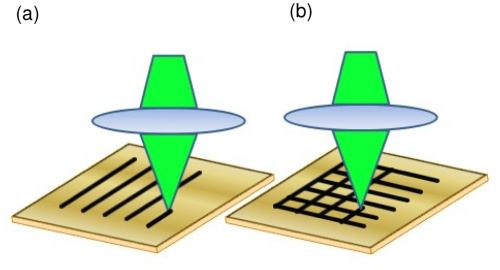
Mitutoyo SJ-210 — meranie Ra na titánových vzorkách
Návrh experimentu — spekaný karbid WC-Co
- Materiál: nepovlakované karbidové doštičky — PRAMET CNHA 120408
(10 % Co · zvyšok WC) - Stroj: LASERTEC 80 Shape (rovnaký ako v štúdii A1)
- Plán: polovičný faktorový 3³ — 27 experimentov
- Stratégia: len krížové šrafovanie (lepšie podľa A1)
- Dva výstupy: drsnosť povrchu Ra + rýchlosť ablácie
- Analýza: Minitab — ANOVA, Paretova významnosť
| Faktor | Ú1 | Ú2 | Ú3 |
|---|---|---|---|
| Frekvencia (kHz) | 40 | 60 | 80 |
| Výkon (W) | 50 | 75 | 100 |
| Rýchlosť skenovania (mm/s) | 1 000 | 1 600 | 2 200 |
| Rozostup dráh (µm) | 5 | 10 | 15 |
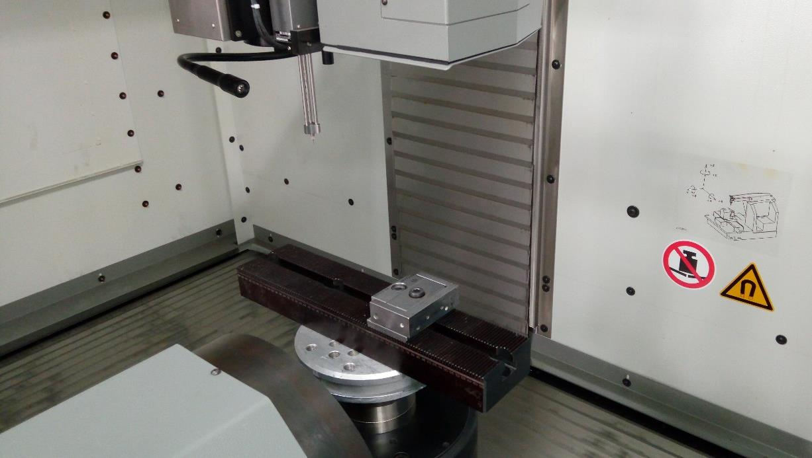
LASERTEC 80 Shape — pracovný priestor s upnutou doštičkou zo spekaného karbidu
Povrchy WC-Co po laserovom mikroobrábaní
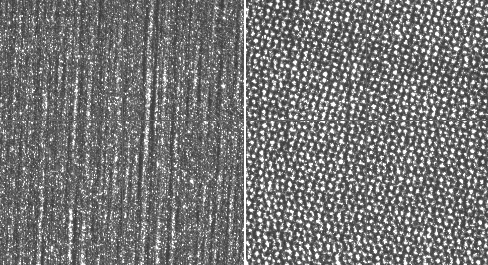
Povrchy č. 1 a 2 — fp = 40 kHz, P = 50/75 W, rôzna rýchlosť a rozostup
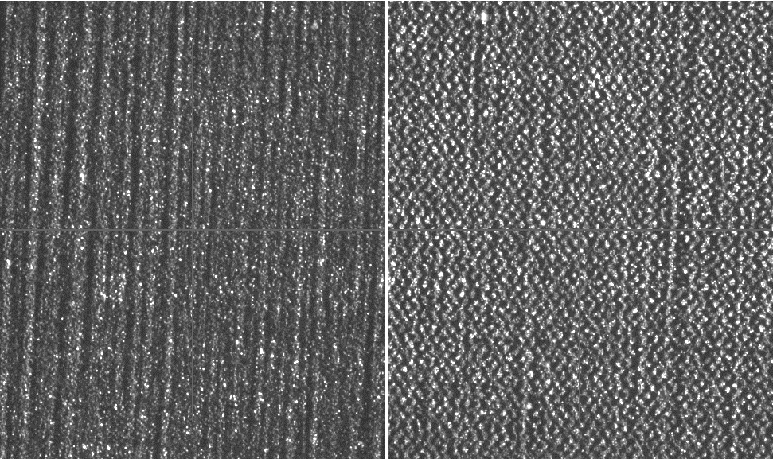
Povrchy č. 3 a 4 — fp = 40 kHz, P = 100 W / 50 W, rôzny rozostup dráh
KĽÚČOVÉ Rozostup dráh a výkon majú na WC-Co najväčší vplyv na Ra aj rýchlosť ablácie. Výsledky poskytujú kalibračný základ pre spekaný karbid, špecifický pre tento stroj.
Ring test — meranie koeficientu trenia
- Kovový krúžok stláčaný medzi dvoma plochami nástroja (4 kroky)
- Zmena vnútorného priemeru je citlivá na trenie:
- Nízke trenie → vnútorný priemer sa zväčšuje
- Vysoké trenie → vnútorný priemer sa zmenšuje
- Koeficient trenia f sa odčíta z kalibračnej krivky
- Porovnanie textúrovaných a hladkých (referenčných) nástrojov
- Použité vo všetkých 3 tribologických štúdiách — B1, B2, B3
Stroj: hydraulický lis EU 40 (0 – 200 kN) · laboratórium tvárnenia MTF STU Trnava
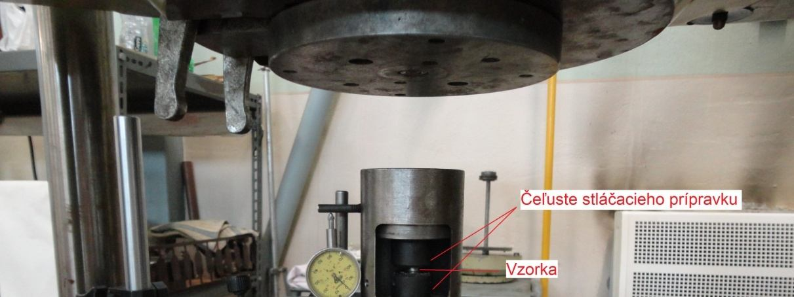
Hydraulický lis EU 40 s prípravkom na pechovanie krúžkov
Laserom štruktúrované povrchy — oceľ 11373
- Materiál: krúžkové vzorky z ocele 11 373 (STN 411373)
- Porovnanie dvoch laserových systémov:
- popisovací laser DM01 — externe (Nové Mesto n. Váhom)
- LASERTEC 80 Shape — CE5AM, MTF
- Tri typy štruktúr:
- Typ A — úzke rovnobežné drážky (rozostup 0,5 mm)
- Typ B — široké hlboké drážky (šírka 0,3 mm)
- Typ C — pologuľové jamky (∅ 0,15 mm)
- Referencia: hladký neštruktúrovaný povrch
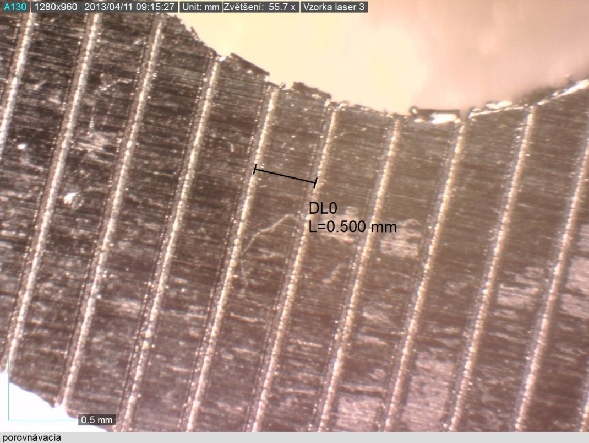
Typ A — úzka drážka (zväčšenie 55,7×)
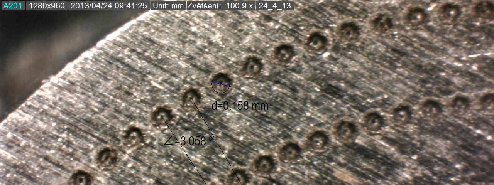
Typ B — široká drážka (LASERTEC 80 Shape)
Výsledky koeficientu trenia — oceľ 11373
| Vzorka | Štruktúra | Laser | f (–) |
|---|---|---|---|
| Z1_01 | Referencia (bez štruktúry) | — | 0,189 |
| A1_01 | Úzke drážky | DM01 | 0,225 |
| A1_06 | Úzke drážky | DM01 | 0,220 |
| A1_08 | Úzke drážky (najlepšia kvalita) | DM01 | 0,260 |
| B1_01 | Široké hlboké drážky | LASERTEC 80 | 0,128 ↓ −32 % |
| C1_01 | Pologule (rozteč 3°) | LASERTEC 80 | 0,213 |
| C1_02 | Pologule (rozteč 6°) | LASERTEC 80 | 0,188 |
Široké drážky (B1) dosiahli najnižšie trenie — veľká geometria drážok vytvára minimálnu skutočnú kontaktnú plochu a pôsobí ako zásobník maziva. Hrebene pri úzkych drážkach zvýšili drsnosť → trenie vyššie ako pri referencii.
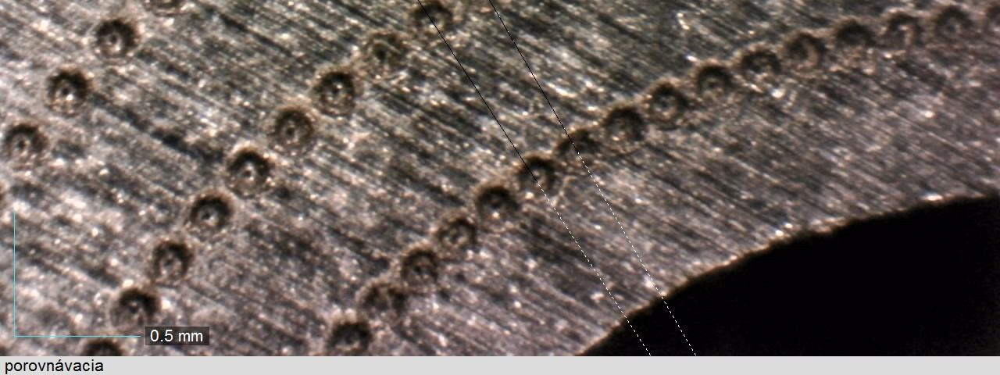
Typ C — pologuľové jamky (∅ ≈ 0,15 mm)
Laserové mikroštruktúrovanie — nástrojová oceľ 1.2311
- Materiál: nástrojová oceľ na formy 1.2311 (40CrMnMoS8-6)
- Stroj: LASERTEC 80 PowerDrill (58 W · 80 kHz · 1600 mm/s)
- Štruktúra: trojuholníková mriežková mikroštruktúra
- Dĺžka ramena prvku: 500 µm
- Hĺbka dutiny: ~410 µm
- Rozostup dráh: 10 µm
- Čas obrábania: ~9 hodín na vzorku
- Kvalita overená optickou mikroskopiou pred Ring testom
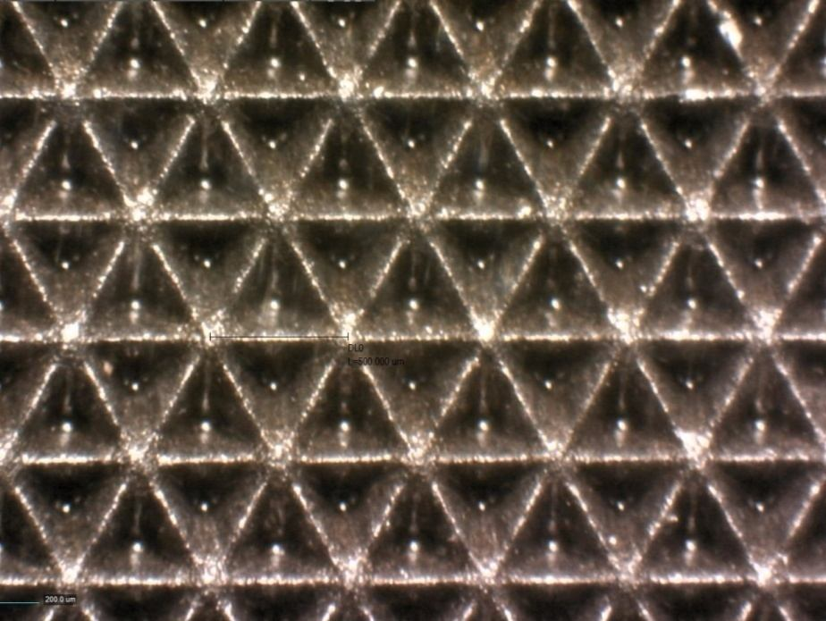
Trojuholníkové mikroštruktúry na povrchu nástrojovej ocele (optický mikroskop, mierka 500 µm)
Ring test — trenie sa zvýšilo (napriek očakávaniu)
Bez štruktúry (referencia)
f = 0,258
Mikroštruktúrovaný
f = 0,315 ↑
- Príčina: príliš veľké štruktúry (500 µm · hĺbka 410 µm) — kov pri stláčaní natiekol do dutín a vytvoril dodatočný odpor
- Nové uplatnenie: tieto štruktúry trenie zvyšujú — vhodné pre chápadlá, protišmykové povrchy, upínacie plochy
- Riešenie: návrat k návrhu 50 µm — vyžaduje femtosekundový laser
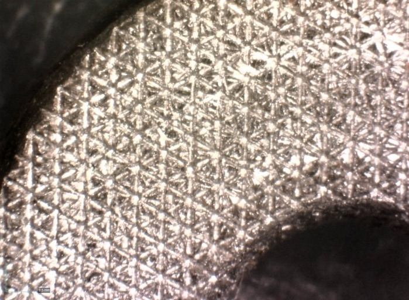
Stlačený krúžok po skúške s mikroštruktúrovaným nástrojom — viditeľné vtlačenie materiálu do dutín
Laserové textúrovanie povrchu — systematická štúdia mazív
- Materiál: tlačné nástroje z nástrojovej ocele 90MnCrV8
- Stroj: LASERTEC 80 Shape
- 4 návrhy textúr s paraboloidnými jamkami (hĺbka 10 – 15 µm)
- 3 podmienky mazania skúšané Ring testom:
- Za sucha — bez maziva
- Variocut C462 — rezná kvapalina s nízkou viskozitou
- Iloform FST4 — tvárniaci olej s vysokou viskozitou
- Spolu 15 konfigurácií Ring testu
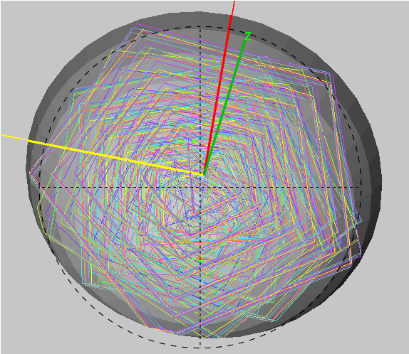
Konfokálna mikroskopia — textúra jamiek na ploche tlačného nástroja
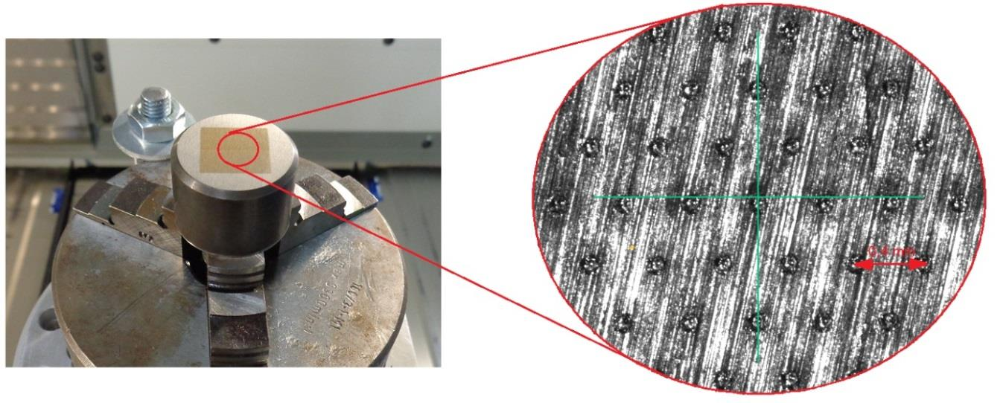
Profil paraboloidnej jamky — povrch nástrojovej ocele
Koeficient trenia — matica textúra × mazivo
| Povrch | Za sucha | Variocut C462 | Iloform FST4 |
|---|---|---|---|
| Referencia (hladký) | 0,275 | 0,295 | 0,164 |
| Textúra I | 0,183 (−33 %) | 0,184 | 0,208 ↑ |
| Textúra II | 0,256 | 0,220 | 0,220 ↑ |
| Textúra III | 0,260 | 0,233 | 0,176 ↑ |
| Textúra IV | 0,250 | 0,158 (−46 %) | 0,153 |
Najlepší výsledok
Textúra IV + Variocut C462 → f = 0,158 (−46 % oproti referencii)
Hlavné obmedzenie
Vysokoviskózne mazivo (Iloform) prevláda — textúry neprinášajú žiadny prínos. Hĺbka 10 µm je pre LASERTEC 80 Shape príliš malá.
Odporúčanie: piko/femtosekundový laser pre jemné jamky · mazivo s nízkou viskozitou (10 – 20 mm²/s) · pomer hĺbky a priemeru jamky 0,1 – 0,2 · hustota textúry ≥ 30 %
Výroba lámača triesok — CAD → CAM → laser → sken
- Cieľ: vyrobiť laserom geometriu lámača triesok na karbidovej sústružníckej doštičke (alternatíva ku konvenčnému brúseniu)
- Postup:
- CAD: Autodesk Inventor
- CAM: LpsWin (STL → laserové dráhy)
- Obrábanie: LASERTEC 80 Shape (SAUER)
- Overenie: optický 3D skener ATOS GOM
- 6 testov parametrov → optimum: 60 kHz · 2000 mm/s · 29 W
- Rozostup dráh 10 µm · úber materiálu 1 µm/vrstva
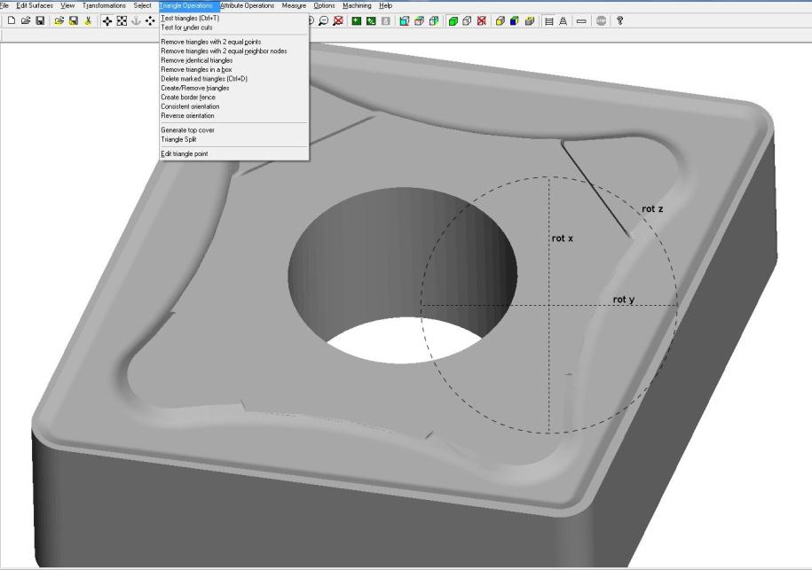
LpsWin CAM — vygenerované dráhy laserového lúča na povrchu reznej doštičky
Výsledok — CAD vs. obrobený tvar (sken ATOS GOM)
Max. odchýlka
0,09 mm
Čas obrábania / strana
~25 – 30 min
- Tvar lámača triesok správne reprodukovaný — geometria potvrdená
- Odchýlka príliš veľká pre sériovú výrobu → len prototypy / výskum a vývoj
- Laserové mikroobrábanie je vhodné na overovanie nových geometrií pri vývoji karbidových a CBN doštičiek
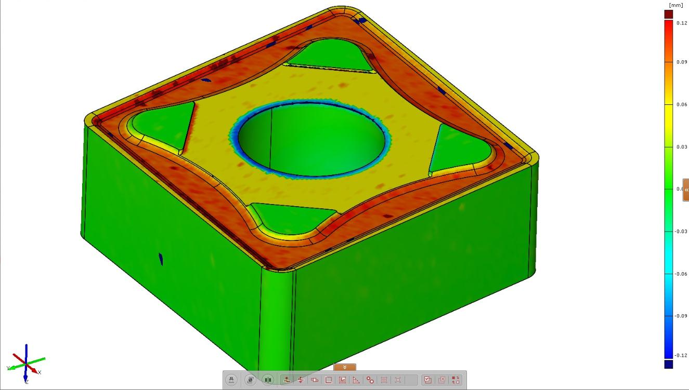
3D sken ATOS GOM — farebná mapa odchýlok: obrobený lámač triesok vs. model CAD
Textúrovanie vstrekovacích foriem — rovné a päťosové dutiny
- Cieľ: naniesť dekoratívne/funkčné textúry na dutiny formy; preniesť ich na plastové diely z HDPE
- Postup:
- Návrh v CAD (4 textúry) — Autodesk PowerSHAPE
- STL → bitmapa (GenBmp) → umiestnenie textúry (GIMP)
- LpsWin: definícia parametrov obrábania + dráh
- LASERTEC 80 Shape (rovná + päťosová dutina)
- Vstrekovanie: mikrostroj Babyplast (HDPE)
- Nastavenie: rozostup dráh 20 µm · 0,002 mm/vrstva · 80 kHz · 1600 mm/s
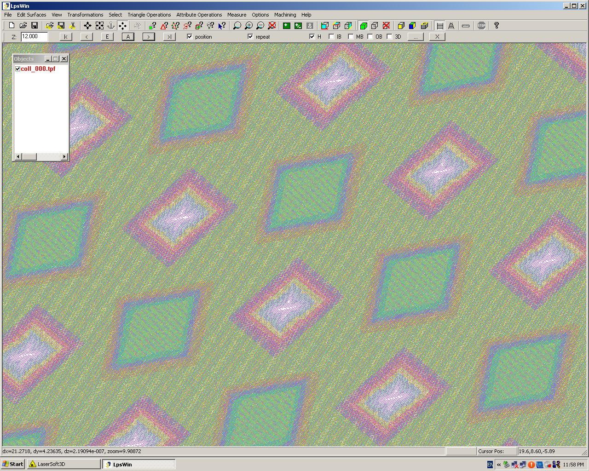
LpsWin — laserové dráhy bitmapy textúry na povrchu formy
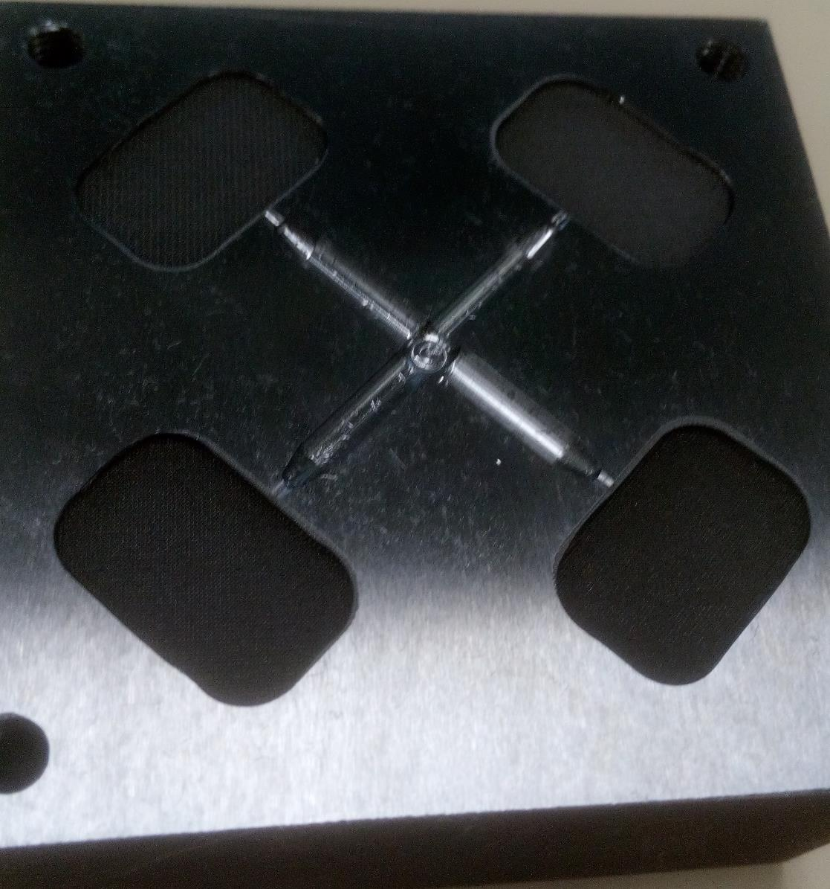
LpsWin — oblasť obrábania definovaná na dutine formy
Výsledky textúrovania — tri výrobné kolá
1. kolo — rovná dutina (textúry 0,4 – 0,84 mm)
Textúry po vstrekovaní neviditeľné — príliš malé. Forma prefrézovaná, všetky textúry prepracované na 4 mm.
2. kolo — rovná dutina (prepracované, 4 mm)
2 zo 4 textúr splnili požiadavky. Oválny artefakt formy a jetting (nevhodný vtok) pretrvávali.
3. kolo — päťosová zložitá dutina
Všetky textúry na forme viditeľné. Kvalita v strede dutiny zhoršená — možný pohyb prípravku alebo chyba programovania. Najlepšia šesťuholníková textúra (najhlbšia geometria, najlepší prenos na HDPE).
Hlavné zistenie: hĺbka textúry > 1 mm je rozhodujúca pre spoľahlivý prenos na plast. Päťosové textúrovanie zložitých plôch je realizovateľné.
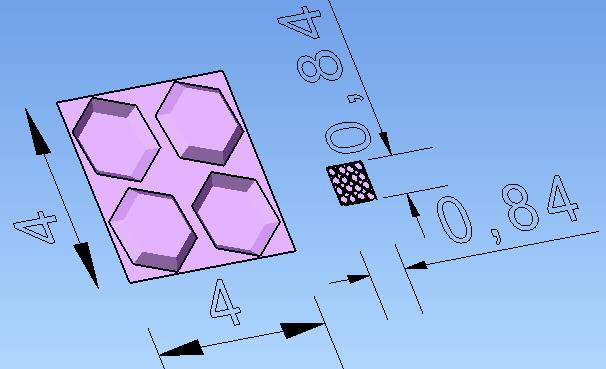
Prepracované textúry na dutine formy (mierka 4 mm) — zreteľné vzory pred vstrekovaním
Zhrnutie — 7 výskumných prác o laserovom mikroobrábaní
| Kat. | Materiál / aplikácia | Metóda | Hlavný výsledok |
|---|---|---|---|
| A | Titán GRADE 2 | Taguchi L9, šrafovanie a krížové šrafovanie | Ra = 1,17 µm / 1,55 µm izotropne; dominuje rozostup dráh (> 51 %) |
| A | Spekaný karbid WC-Co | Polovičný faktorový plán, 27 exp., krížové šrafovanie | Optimálne parametre pre Ra a rýchlosť ablácie; najväčší vplyv má výkon + rozostup |
| B | Oceľ 11373 — drážky a jamky | Ring test, 2 laserové systémy | Široké drážky: f = 0,128 (−32 %); úzke drážky trenie zvýšili |
| B | Nástrojová oceľ 1.2311 — veľké štruktúry | Ring test, LASERTEC 80 PowerDrill | Trenie sa zvýšilo (f = 0,315) — vhodné na uchopenie, nie na mazanie |
| B | Nástrojová oceľ 90MnCrV8 — textúry jamiek | Ring test, 4 textúry × 3 mazivá | Najlepšie: Textúra IV + Variocut C462 → f = 0,158 (−46 %) |
| C | Lámač triesok na karbidovej doštičke | CAD → CAM → LASERTEC → sken ATOS | Tvar prototypu dosiahnutý; odchýlka 0,09 mm; 25 – 30 min/strana → len výskum a vývoj |
| C | Textúrovanie vstrekovacích foriem | Bitmapa + päťosový LASERTEC → Babyplast | Päťosové textúrovanie realizovateľné; rozhodujúca hĺbka > 1 mm; najlepší prenos pri šesťuholníkovej textúre |
Všetky štúdie: DMG MORI LASERTEC 80 Shape · Centrum excelentnosti CE5AM · MTF STU Trnava · 2013 – 2018